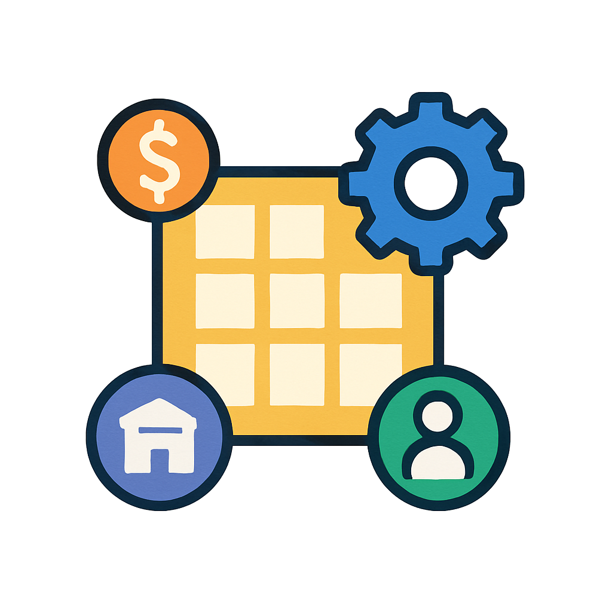
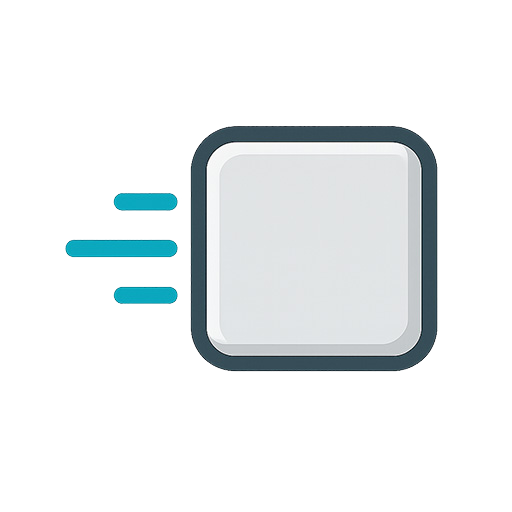
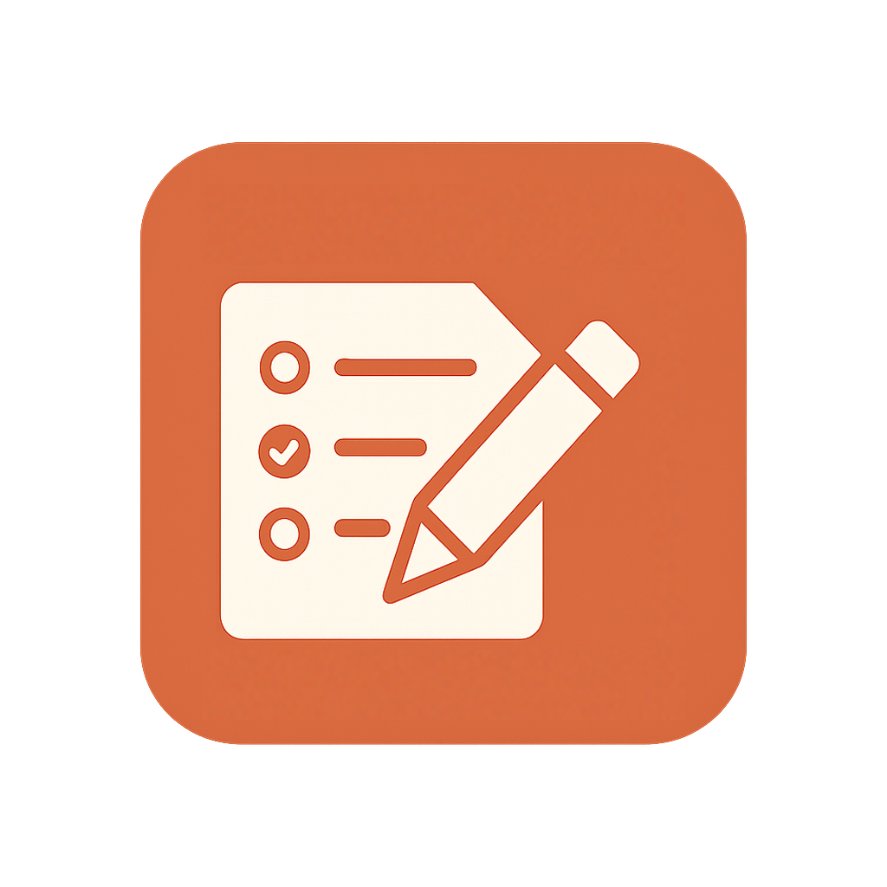

// Portfolyo
Geliştirdiğim mobil uygulamalar, oyunlar ve kurumsal web/masaüstü yazılım projelerinin detaylı arşivi. Ekran görüntüleri ve detaylar için projelere tıklayın.
Google Play Store'da aktif olarak yayında olan zaman işleyiş ve muhasebe kayıt uygulaması.

Kurumsal kullanım için geliştirilmiş, gelişmiş filtreleme ve API bağlantısı içeren mobil operasyon yönetimi.

Klasik 15 bulmaca oyununun modern, optimize edilmiş ve akıcı animasyonlara sahip mobil versiyonu.

Optik okuyucudan alınan sınav verilerini işleyip analiz eden ve sonuçları raporlayan masaüstü aracı.
Kullanıcı dostu arayüzü ve kayıt özellikleriyle pratik kullanım sunan dijital zikirmatik uygulaması.
GPS ve cihaz sensörlerini kullanarak en doğru kıble yönünü tespit eden mobil pusula aracı.
Eğlenceli, dinamik yapısı ve kendine has mekanikleriyle dikkat çeken interaktif mobil uygulama projesi.
Hukuk büroları ve avukatlar için tasarlanmış, mobil uyumlu (responsive) kurumsal web sitesi projesi.